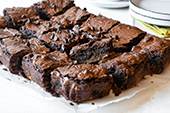

Otras recetas
Receta brownie

Ingredientes
- 70 gramos de manteca
- 2 huevos
- 1 cucharada sopera de agua
- Pre-mezcla Exquisita
Preparación
- Enmantecá y enhariná un molde cuadrado de 21x21x4cm., o redondo de 24x8cm. de alto.
- Precalentá el horno a 160°C durante 15 minutos.
- Colocá los huevos y la manteca previamente derretida en un bowl y mezclá bien.
- Agregá la pre-mezcla y el agua, y mezclar hasta lograr una consistencia uniforme.
- Pasá la preparción al molde y llevalo al horno.
- Horneá a 160°C por 25-35 minutos.
- Dejar enfriar completamente antes de cortar.
Video tutorial